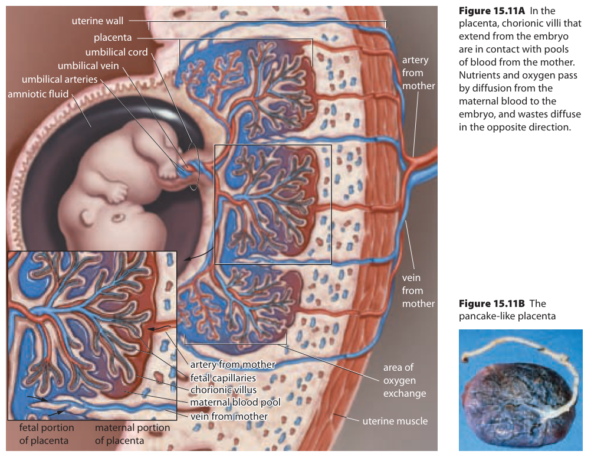

Use these definitions when you need help with a term.
An organ formed from fetal and maternal contributions that supports exchange and hormone production during pregnancy.
A projection containing fetal tissues and capillaries that increases placental exchange area.
A vessel carrying blood from the fetus toward the placenta.
The vessel carrying blood from the placenta toward the fetus.
How can substances cross while the blood stays separate?
The is an organ with both fetal and maternal contributions. Its fetal part includes branching chorionic villi, projections containing fetal tissues and capillaries. Capillaries are small blood vessels where exchange occurs. Maternal blood occupies spaces around the villi; fetal blood travels inside their capillaries. The two blood supplies are close, but they do not normally become one continuous bulk stream.
Begin with A in the schematic: it points into maternal blood outside the villus. B points to the villus boundary. Inside is a simplified fetal capillary loop. Oxygen and nutrients must cross intervening placental tissues to reach fetal blood. Carbon dioxide and metabolic wastes cross in the other direction, toward maternal blood and the organs that remove them.
For oxygen, diffusion moves molecules down an appropriate gradient across the exchange surface. Continuing maternal and fetal blood flow supplies and removes materials, helping maintain those gradients. Nutrients do not all cross by the same mechanism: some use carrier proteins, and some transport requires energy. The drawing summarizes net directions, not one universal transport mechanism.
Placental exchange: two separate circulations
[Figure: Maternal blood surrounds a chorionic villus. Fetal blood flows through vessels inside that villus. Oxygen and nutrients cross inward; carbon dioxide and wastes cross outward. The blood streams stay separate. | ./assets/figures/ch15-placenta.svg]
Maternal blood surrounds a chorionic villus. Fetal blood flows through vessels inside that villus. Oxygen and nutrients cross inward; carbon dioxide and wastes cross outward. The blood streams stay separate. Schematic — not to scale.
Structure helps explain performance. Many villi provide a large exchange area, and a short distance between the blood supplies helps substances cross efficiently. If the functional exchange area were reduced while other conditions stayed the same, less surface would be available for transfer. A nearby blood supply is useful only if the exchange tissues and blood flow also function.
The placenta continues growing and changing through pregnancy. The statement on textbook p. 516 pairing “fully developed” at about ten weeks with a mass of about 600 g should not be used as a developmental fact. A mass around 500–600 g is associated with a delivered term placenta, with substantial variation. It is not a ten-week target or a measure of an individual's placental function.
Follow the fetal circuit by the arrows
A usual umbilical cord contains two umbilical arteries and one . An artery carries blood away from the heart; a vein carries it toward the heart. These names refer to direction, not a fixed oxygen content. The relevant heart here is the fetal heart.
Fetal blood leaves toward the placenta through the umbilical arteries. In placental fetal capillaries, it gains oxygen from maternal blood and loses carbon dioxide toward the maternal circulation. The umbilical vein returns this blood toward the fetus. It is relatively oxygen-rich because of exchange at the placenta, not because a vein makes oxygen or maternal blood pours directly into it.
In the schematic, C represents the incoming arterial route marked “From fetus,” and D the returning venous route marked “To fetus.” Follow the white arrows around the loop. The drawing compresses branching vessels into one route; it does not show both actual umbilical arteries separately or mean that a whole umbilical artery fits inside one villus. The crossing arrows show movement of substances, while the white arrows show fetal blood flow.
Now use the source picture below to connect those directions with the anatomy. Locate the cord between fetus and placenta, then the labelled umbilical arteries and vein. In the enlarged villus inset, distinguish fetal capillaries from the maternal blood pool around them. The maternal artery and vein belong to the maternal circulation, not to the cord's fetal round trip.
Placenta and chorionic villi

[Figure: Fetal vessels extend into chorionic villi, next to maternal blood spaces. Substances cross the placental interface rather than both circulations becoming one continuous blood stream. | ./assets/figures/ch15-source-placenta.png]
Fetal vessels extend into chorionic villi, next to maternal blood spaces. Substances cross the placental interface rather than both circulations becoming one continuous blood stream. Inquiry into Biology, Chapter 15, p. 517.
The original caption groups nutrient movement under diffusion. Use the more precise distinction: oxygen and carbon dioxide can diffuse, while different nutrients use different transport mechanisms. The picture shows the exchange route, not one mechanism for every substance.
Keep two pathways in your explanation: maternal vessels deliver and drain maternal blood around the villi; fetal umbilical vessels deliver and return fetal blood inside placental vessels. Oxygen can move from one side to the other without a normal bulk mixing of those streams.
Useful exchange does not make a perfect filter
Exchange is one placental job. The placenta also has an endocrine role, releasing hormones such as and estrogen as pregnancy continues. It transfers some maternal antibodies, which can provide temporary passive protection. Passive protection means receiving existing antibodies; it does not mean the fetus has acquired complete immunity to every infection.
The placental interface is selective, but it does not exclude every harmful substance or infectious agent. Alcohol and some drugs or infectious agents can cross or affect the developing system. Saying that the placenta is a barrier describes tissues separating the circulations; it does not make those tissues an impenetrable wall.
Distinguish exposure from outcome. Evidence that a substance reaches fetal blood establishes that exposure occurred. To evaluate a possible effect, we also need to know the agent, amount, timing and the developing tissues' susceptibility. A substance may interfere with a process even without becoming a visible structural component. A single transport result does not establish a particular injury or severity.
The placenta therefore supports development through exchange and hormone production while remaining a possible route or target of harmful exposure. Its size alone, the presence of a barrier, or the name of a vessel cannot answer every question about function. The next lesson examines why the developmental stage changes the significance of an influence.
Optional textbook questions may revisit neurulation and early embryonic stages. The nutrition diagram on p. 518 has a separate time convention, “weeks after implantation.” Preserve that axis when interpreting the supplied model rather than silently treating it as weeks after fertilization.
Worked example
Trace a molecule and the blood carrying it
A carbon dioxide molecule is produced in a fetal tissue. Trace its route toward removal by maternal organs, and explain why the route does not require the two blood supplies to mix.
Start on the fetal side. The molecule enters fetal blood and is carried through the fetal circulation. Blood headed for the placenta travels through the umbilical arteries, away from the fetal heart.
Identify the exchange step. In the placental capillaries, carbon dioxide crosses the intervening tissues toward maternal blood. This is a substance crossing a boundary, not the whole fetal blood stream pouring into a maternal vessel.
Follow the maternal route. Maternal blood carries carbon dioxide away from the exchange region toward maternal organs; the lungs can remove carbon dioxide from the blood.
Complete the separate fetal round trip. Fetal blood, with relatively less carbon dioxide and more oxygen after exchange, returns toward the fetus through the umbilical vein.
Check the arrows in the schematic: the carbon-dioxide arrow points outward toward A, while the returning fetal-blood arrow at D points toward the fetus. Reversing the molecule's exchange direction because the vein is drawn red would confuse colour with the biological route. For oxygen, trace the exchange in the opposite direction, from maternal blood into fetal capillaries, then follow the fetal return route.
 [Figure: Maternal blood surrounds a chorionic villus. Fetal blood flows through vessels inside that villus. Oxygen and nutrients cross inward; carbon dioxide and wastes cross outward. The blood streams stay separate. | ./assets/figures/ch15-placenta.svg]
[Figure: Maternal blood surrounds a chorionic villus. Fetal blood flows through vessels inside that villus. Oxygen and nutrients cross inward; carbon dioxide and wastes cross outward. The blood streams stay separate. | ./assets/figures/ch15-placenta.svg]